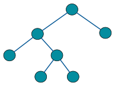
For any node \(x\) in a binary search tree
typedef struct tree {
item_type item;
struct tree *left;
struct tree *right;
} tree;
tree *search_tree(tree *t, item_type x) {
if (t == NULL) return(NULL);
if (t->item == x) return(t);
if (x < t->item)
return(search_tree(t->left, x));
else
return(search_tree(t->right, x));
}
Where are the minimum and maximum values in a binary search tree?
tree *find_minimum(tree *t) {
tree *min; /* pointer to minimum */
if (t == NULL) return(NULL);
min = t;
while (min->left != NULL)
min = min->left;
return(min);
}
tree *find_minimum(tree *t) {
if (t == NULL) return(NULL);
if (t->left == NULL) return t;
return find_minimum(t->left);
}
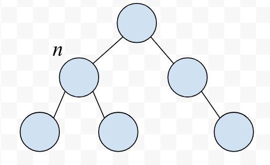
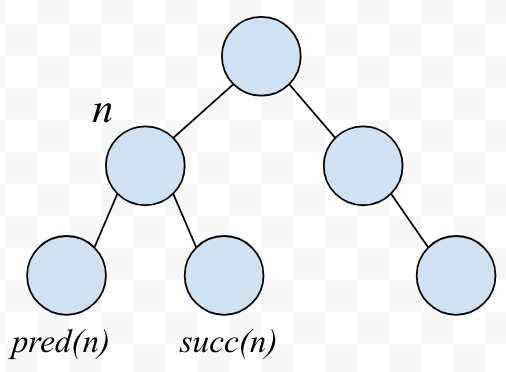
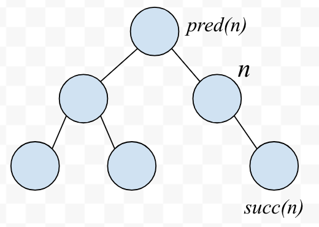
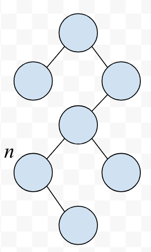
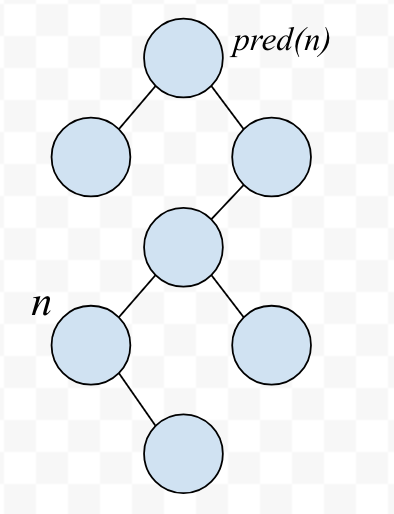
void traverse_tree(tree *l, void (*f)(item_type)) {
if (l != NULL) {
traverse_tree(l->left, f);
f(l->item);
traverse_tree(l->right, f);
}
}
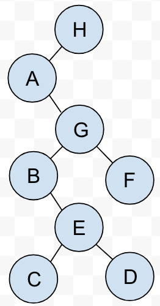
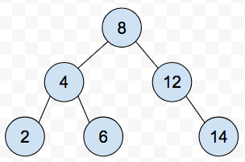
insert_tree(tree **l, item type x, tree *parent) {
tree *p;
if (*l == NULL) {
p = malloc(sizeof(tree));
p->item = x;
p->left = p->right = NULL;
p->parent = parent;
*l = p;
return;
}
if (x < (*l)->item)
insert_tree(&((*l)->left), x, *l);
else
insert_tree(&((*l)->right), x, *l);
}
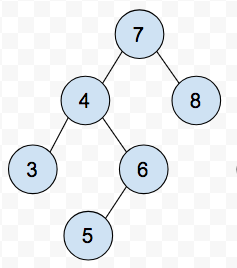
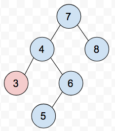
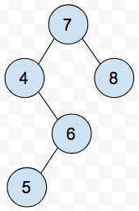
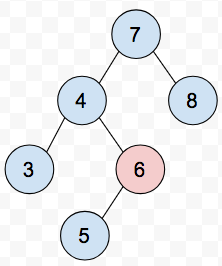
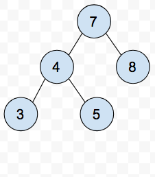
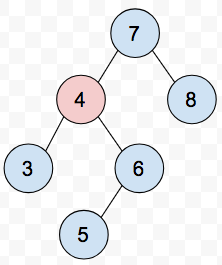
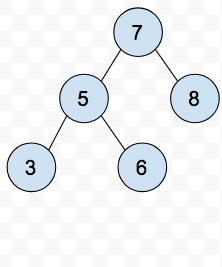
| Operation | Complexity |
|---|---|
| Search | O(h) |
| Insert | O(h) |
| Delete | O(h) |
| Min/Max | O(h) |
| Pred/Succ | O(h) |
Why not \(O(\log n)\)?
\[\sum_{i=0}^{\log n} 2^i \approx n\]
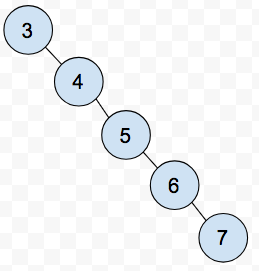
On average, binary search trees constructed with random insertion orders operate in \(\theta(\log n)\). Half of the time, the value will be closer to the median than to the min or max.
Sort \(n\) numbers. You have access to a dictionary data structure backed by a balanced binary tree which supports each of the dictionary functions in \(O(\log n)\) time.
min, succ, insert and searchmin, insert, delete and searchinsert and in-order traversal
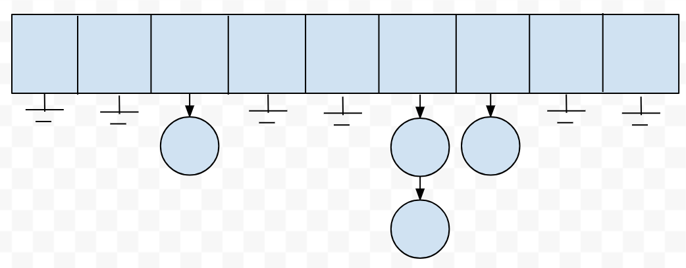
Good hash functions:
\[h = \sum_{i=0}^{keylength} 128^i \times char(key[i])\]
For the string "hello" this is 30024610504.
For the string "Detroit Labs is cool" it's
1185532983286754203132857547208457428218564
hash("hello") % 61 = 6
hash("Detroit Labs is cool") % 61 = 21
Good hashing or bad hashing?
| Expected | Worst Case | |
|---|---|---|
| Search | \(O({n \over m})\) | \(O(n)\) |
| Insert | \(O(1)\) | \(O(n)\) |
| Delete | \(O(1)\) | \(O(n)\) |
| Predecessor | \(\theta(n+m)\) | \(\theta(n+m)\) |
| Successor | \(\theta(n+m)\) | \(\theta(n+m)\) |
| Minimum | \(\theta(n+m)\) | \(\theta(n+m)\) |
| Maximum | \(\theta(n+m)\) | \(\theta(n+m)\) |
Hashing is used for all kinds of clever things outside of doing fast searches, as it gives us a short but highly distinct representation of a large document.
Is some record different from the rest in a collection?
Hash the record and compare to existing hash codes.
Does part of this record exist in part of another record?
Hash overlapping windows of the documents, if hash codes match, possible match in partial records.
Detecting changes in a file?
Hash the file and compare against the hash of the original - git works this way.
Input: A text string t and a pattern string p Problem: Does t contain the pattern p as a substring and if so, where? e.g. Is "Dotz" in the Poetic Edda? Is "Ee-Ei-Ee-Ei-Oh" in the Bible?
What is the complexity of implementing such a queue with each of the following data structures?
| Unsorted Array | Sorted Array | Balanced Binary Tree | |
|---|---|---|---|
| insert | |||
| find-min | |||
| delete-min |